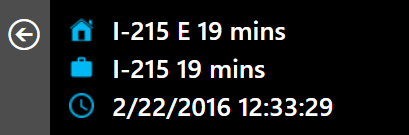
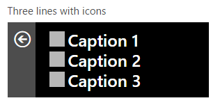
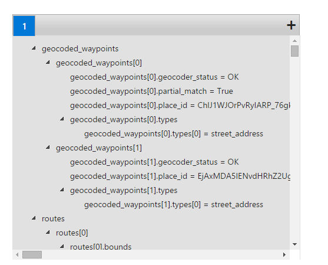
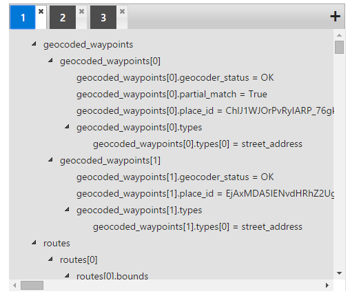
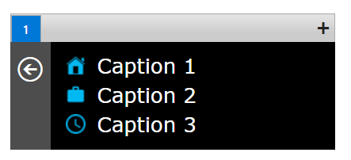
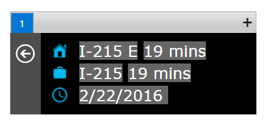
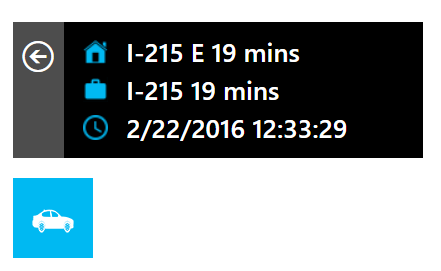

This guide walks you through how to create your own Microsoft Band tile that tells you the traffic to/from work. The Microsoft band is a wearable fitness and smartwatch that has a number of useful features for a pretty nice price. Microsoft has made a cool web tool that lets you build your own apps for the watch by just dragging and dropping. We can combine this with the free Google Directions API in order to display traffic info on the watch!

Thanks to /r/MicrosoftBand on Reddit for featuring my guide on how to do this!
First, if you haven't followed my other guides on how to get an API key for Google Directions, we'll do that now. We have to do this first, so that we can access the traffic data from Google. Follow the instructions below:
First, get a google maps API account here: https://developers.google.com/maps/ Click "Get Started" and then click on Google Maps Android API. Then click on "Get a Key". Create a new project and name it whatever you want. Generate an API key, and take note of it. From here on out, I will refer to this key as YOUR_API_KEY.
Side note: At some point, it may ask you to enter a credit card. I don't think you have to if you don't want to, but I think it gives you more free API requests per day. You shouldn't exceed the free 2,500 requests per day anyhow.
Click on the "Overview" button on the left tab (of the API manager screen), then expand the Google Maps APIs section. Click on "Google Maps Directions API", and then enable it at the top. From here, you can also visit the USAGE tab to see how many requests you have made for directions, or visit the QUOTAS tab to limit your daily quota to the free amount so you never get billed (or, at least that's my understanding).
Once you have an API key, we can proceed with making our tile app! Just follow the directions below:
1. Click on this link to be taken to the Microsoft Band Developers Page
2. Click on the blue Get Started button
3. At the top, click on Multiple Page Tile. We have to choose this one, because if you choose single page you can only use one JSON feed to get your data. We need 3 for our purposes, even though we only really need 1 page for our tile.
4. Now select this layout:

5. You will now be asked to enter a URL to get the data from. You're going to copy the URL below, but make some modifications first. Replace the red text with your origin (where you will be coming from - for example, your home address). Use plus signs for spaces - For example, if you live at 102 Apple Street 89213 enter 102+Apple+Street+89123. Replace the green text with your destination, using the same format as above (for example, use your work address). Finally, replace the yellow text with the API key you got from Google above.
6. Before you copy your modified URL into the box on Microsoft's website, paste it into your browser and hit enter. You should see a long list of code that begins with the words "geocoded_waypoints". If you see this, then you're on the right track! If not, it will give you an error. Read the error and try to fix it. For example, if it says INVALID API KEY, then your API key is incorrect - take another look to make sure it is right.
7. Now, press CTRL+F on this same page of code and search for "traffic" (without the quotes). If you find it, then you are good to go! Skip this step. If you do not find it, then you haven't set up your API key correctly (Google requires you to have a working API key to access their traffic data). Return to the Google API Manager (linked above) and make sure you have really enabled the Google Directions API (not any others!). When it is working correctly, you should be able to find "traffic" on the page. Be sure to keep refreshing the page after you make any changes, or else the results won't update!
8. If everything looks good, then go ahead and paste the URL you made into the box on Microsoft's website. Save a copy though! You will need it again!
9. You will now see something that looks like the following:

10. Go ahead and click the plus sign that is located to the top right (as seen in the above image). Microsoft will ask you for another URL. This time, you can paste the same URL but switch your origin and destinations. Now you have traffic coming and going! Do this, and then click on the plus once more. This time paste the following URL, except change the part in yellow to be your time zone. Mine is Pacific Standard Time (PST), but yours may be different.
11. Your Microsoft page should now look like the following (notice the 3 tabs):

12. Perfect! Now we can add icons to our web tile by clicking on the pencil icons in the tile preview pane. For my tile, I chose icons to designate work, home, and a clock (you'll see why soon!). Here's a download link if you'd like to use the same ones. There's also a car icon, which we can use as the main image for our tile.

13. Next, all you have to do is drag and drop the parts of the code on the right that you want to show up on the left! Start with code tab #1. The first piece of code you are looking for is at the very bottom of the code, so scroll all the way down. You're looking for a line that says "routes[0].summary = " that is followed most likely by a road or highway you use to get to home or work! This is a nice summary Google gives to let you know which route you should take to get to work the fastest. Drag this piece of code onto one of the 3 lines saying "Caption" in the preview pane. If done correctly, it should automatically propagate that field with that piece of information. Make sure you drag it to the right spot (i.e., if it's the way you get to work then make sure you drag it next to the work icon! Not next to home!).
14. Next, scroll all the way back to the top and look for another piece of code that reads "routes[0].legs[0].duration_in_traffic.text =". It should be about 2 drags of the mouse wheel down. Drag and drop this piece of code right next to the piece you dropped a second ago. Now you've got your fastest route and the time it will take in traffic!
15. Repeat steps 13 and 14 using tab 2 of the code box, this time dragging it next to the other icon. Now you should have your route and travel time for the opposite direction.
16. Finally, go to code tab 3 and drag the only line of code there onto the last line, next to the clock. This is the current time, which we add so we can tell when our Band pulled the traffic info. You wouldn't want to look at it without realizing the information was from 2 hours ago! When you're done, it should look something like this:

17. Click next, and then skip the next page that asks if you want to set up notifications. Finally, on the last page, you can set the color scheme and give your tile an icon (there's a car icon included in my download pack above). When you're done, you can click a button to download your tile (don't submit it - that gives it to the public which we don't want - it has your own address and your own API key in it!). Send the tile to yourself as an email attachment, and then open it on your phone. It should launch via the Microsoft Health app. Viola! You made your own traffic tile! You can use the same process to also make things like web feeds for your favorite sites.
